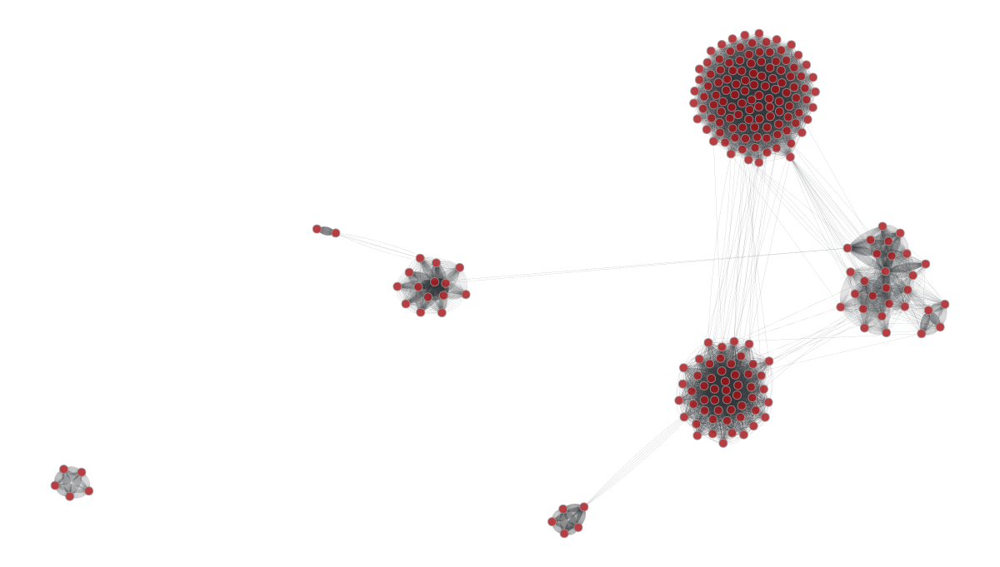

Is Hollywood’s social network composition unique or do other movie industries follow suit ? Hollywood is the most famous movie production industry in the world. It has a reputation of being a high-class, exclusive and hard to get in environment. Having a good network is undoubtedly very important to make it there. Clubs, communities and social dynamics between actors, directors, and producers take shape within this environment
What are the specifities of the composition and shape of the Hollywood social network ? Are they unique and part of its “identity” or is it a social network that all movie industries follow / or are bound to (Bollywood, Chinawood being other major movie industries). Through a “co-stardom graph” showing actors who played in the same movies, we will look at its evolution over time and compute different graph metrics (centrality,…), run cluster analysis and compare these metrics across different industries.
The American Movie Industry
Here we include some of our initial analyses.
Of Characters and Men
We begin our analysis with a part of the actors that exhibits pre dominant character tropes features : as we will see
most of them are Hollywood actors featuring in successful movies (in average). Can you guess the top genres containing
the most character tropes ?
As you could have guessed, the Action genre contains the most clichés characters such as ... . We might wonder next what are the most
frequent character types ?

We next want to know who are the most successful actors : for this purpose, we compute the global movie revenue
of the films in which an actor/actress starred in (i.e the sum of the individual revenue). We next plot the ten most successful
actors that have a character trope :
PCA ACTORS

PCA ACTORS TOP 10
Network Analysis
Upon examining the co-stardom graphs of Hollywood and Bollywood, it is evident that there are significant differences in the structures of the networks. *
The Hollywood graph displays multiple distinct communities, while the Bollywood graph is centered around a single central community with several smaller communities in close proximity.

One possible explanation for this difference is that the Hollywood film industry may be more collaborative, with actors frequently working together on multiple projects and forming strong connections as a result.
The presence of multiple distinct communities in the Hollywood network suggests that there are different groups of actors who frequently work together and may be more closely tied to one another than actors in other communities.
On the other hand, the centralized structure of the Bollywood network may indicate a hierarchical system in which a select group of actors hold more power and influence within the industry.
The smaller communities surrounding the central community may represent actors who are connected to this group in some way, either through shared projects or personal relationships.
It is also worth noting that there are many nodes in the Bollywood network that are excluded from any particular community.
This may suggest that there are actors in Bollywood who are less connected to other actors in the industry, or who are not as closely tied to any particular group or community.

Ego Network
Once we had the co-stardom graphs for Hollywood and Bollywood, we compared them using different centrality measures and network analysis techniques.
For example, we found that the average degree, or the average number of connections per actor, was higher in Hollywood than in Bollywood.
This means that actors in Hollywood tend to work with more people. We also found that the clustering coefficient, or the measure of how much actors cluster together in groups, was higher in Bollywood.
This shows that actors in Bollywood are more likely to work with the same colleagues over and over.


Network analysis
Conclusion